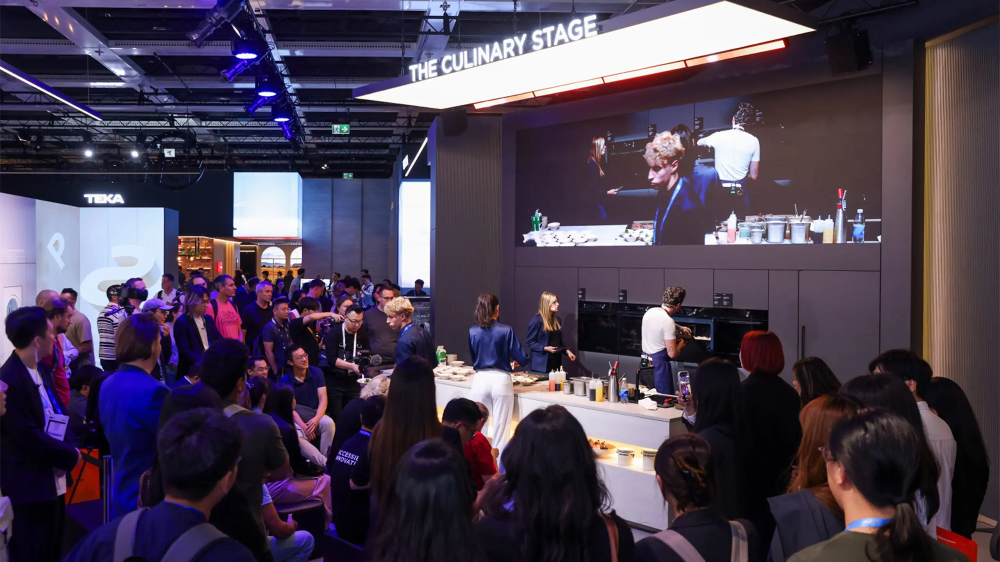
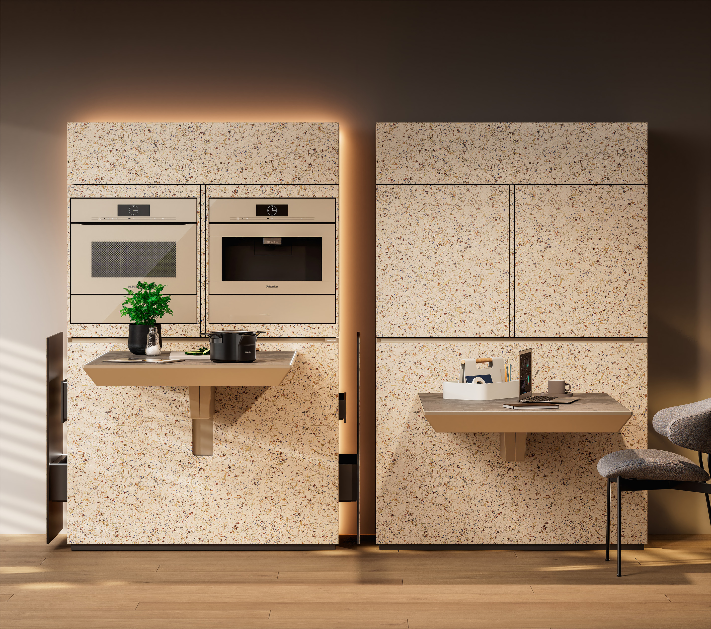
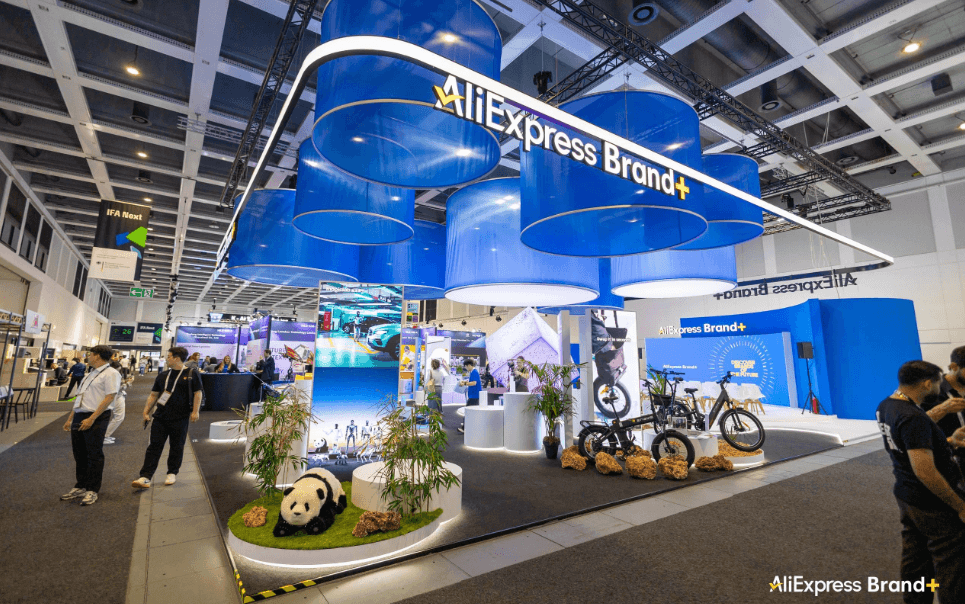

1厨房智能硬件 · 烹饪技术
美的 SpaceMaster：350℃高温烤箱走上 IFA 烹饪台
高温之外，更要看热量能否及时、均匀地送到食物。

美的IFA烹饪舞台现场，后墙可见烤箱。图片来自Midea 9月5日官方展会报道；图片不用于证明具体型号参数。美的9月7日披露，SpaceMaster嵌入式烤箱在IFA完成现场烹饪展示。品牌称，石墨烯热风加热系统支持最高350℃烹饪，加热系统响应时间可低至0.2秒。
0.2秒指加热系统响应，不是整腔升至350℃的时间。该系列9月2日已预告，全球上市计划为2027年；本次报道的增量是展会演示及参数澄清。
2厨房空间设计 · 工业设计
Miele × 海蒂诗：一套厨房家具，切换做饭、用餐与办公
把有限面积按时间重新分配：同一块台面，承担一天里的不同任务。

Miele官方概念展示图：左侧烹饪、右侧办公。原图随4月21日概念资料发布，非9月IFA现场照片。Wood & Panel Europe 9月7日报道，Miele与海蒂诗的Compact Living Kitchen Unit正在IFA展示。该概念把厨电、工作台与收纳整合，探索小空间中的多功能使用。
海蒂诗原始说明显示，旋转机构让电器显露或隐藏，升降机构调整台面高度，电动抽屉配合取用。这是4月米兰设计周已发布的概念研究，本次按展会设计观察收录。
3AI硬件出海 · 市场观察
36氪出海观察：AI硬件出海，开始补齐品牌与本地仓配
从展台上的一次体验，到用户收到产品后的长期使用，交付链路也影响产品竞争力。

速卖通Brand+在IFA的现场展台。来源：36氪出海9月7日报道配图，保留原始画幅。36氪出海9月7日报道，速卖通Brand+携9个中国品牌参加IFA，并展示品牌营销、AI运营工具及欧洲仓配升级。选品分析、定价与多语种内容工具，正成为品牌出海的配套能力。
报道援引平台数据称，1—7月AI硬件品类出海同比增长100%；德国官方仓计划9月中旬开仓。该增速仅代表平台口径，不能据此推断全球AI硬件或厨电市场增长。
36氪出海 · 2026-09-07 11:21（页面元数据）近24小时报道 · 9/7 11:21 · 德国仓仍为计划开仓编辑评分 82/100 · 配图自评 90/100